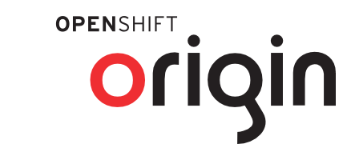
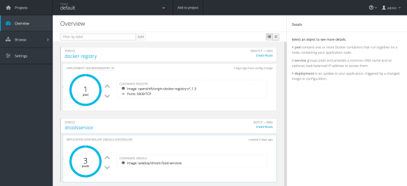

High Availability Drools Stateless Service in Openshift Origin

Hi everyone! On this blog post I wanted to cover a simple example showing how easy it is to scale our Drools Stateless services by using Openshift 3 (Docker and Kubernetes). I will be showing how we can scale our service by provisioning new instances on demand and how these instances are load balanced by Kubernetes using a round robin strategy.Our Drools Stateless Service
First of all we need a stateless Kie Session to play around with. In these simple example I’ve created a food recommendation service to demonstrate what kind of scenarios you can build up using this approach. All the source code can be found inside the Drools Workshop repository hosted on github: https://github.com/Salaboy/drools-workshop/tree/master/drools-openshift-example
In this project you will find 4 modules:
- drools-food-model: our business model including the domain classes, such as Ingredient, Sandwich, Salad, etc
- drools-food-kjar: our business knowledge, here we have our set of rules to describe how the food recommendations will be done.
- drools-food-services: using wildfly swarm I’m exposing a domain specific service encapsulating the rule engine. Here a set of rest services is exposed so our clients can interact.
- drools-controller: by using the Kubernetes Java API we can programatically provision new instances of our Food Recommendation Service on demand to the Openshift environment.
Our unit of work will be the Drools-Food-Services project which expose the REST endpoints to interact with our stateless sessions.
You can take a look at the service endpoint which is quite simple: https://github.com/Salaboy/drools-workshop/blob/master/drools-openshift-example/drools-food-services/src/main/java/org/drools/workshop/food/endpoint/api/FoodRecommendationService.java
Also notice that there is another Service that gives us very basic information about where our Service is running: https://github.com/Salaboy/drools-workshop/blob/master/drools-openshift-example/drools-food-services/src/main/java/org/drools/workshop/food/endpoint/api/NodeStatsService.java
We will call this service to know exactly which instance of the service is answering our clients later on.
The rules for this example are simple and not doing much, if you are looking to learn Drools, I recommend you to create more meaning full rules and share it with me so we can improve the example ;) You can take a look at the rules here:
As you might expect: Sandwiches for boys and Salads for girls :)
One last important thing about our service that is important for you to see is how the rules are being picked up by the Service Endpoint. I’m using the Drools CDI extension to @Inject a KieContainer which is resolved using the KIE-CI module, explained in some of my previous posts.
We will bundle this project into a Docker Image that can be started as many times as we want/need. If you have a Docker client installed in your local environment you can start this food recommendation service by looking at the salaboy/drools-food-services image which is hosted in hub.docker.com/salaboy
By starting the Docker image without even knowing what is running inside we immediately notice the following advantages:
- We don’t need to install Java or any other tool besides Docker
- We don’t need to configure anything to run our Rest Service
- We don’t even need to build anything locally due the fact that the image is hosted in hub.docker.com
- We can run on top of any operating system
At the same time we get notice the following disadvantages:
- We need to know in which IP and Port our service is exposed by Docker
- If we run more than one image we need to keep track of all the IPs and Ports and notify to all our clients about those
- There is no built in way of load balance between different instances of the same docker image instance
For solving these disadvantages Openshift, and more specifically, Kubernetes to our rescue!
Provisioning our Service inside Openshift
As I mention before, if we just start creating new Docker Image instances of our service we soon find out that our clients will need to know about how many instances do we have running and how to contact each of them. This is obviously no good, and for that reason we need an intermediate layer to deal with this problem. Kubernetes provides us with this layer of abstraction and provisioning, which allows us to create multiple instances of our PODs (abstraction on top of the docker image) and configure to it Replication Controllers and Services.
The concept of Replication Controller provides a way to define how many instances should be running our our service at a given time. Replication controllers are in charge of guarantee that if we need at least 3 instances running, those instances are running all the time. If one of these instances died, the replication controller will automatically spawn one for us.
Services in Kubernetes solve the problem of knowing all and every Docker instance details. Services allows us to provide a Facade for our clients to use to interact with our instances of our Pods. The Service layer also allows us to define a strategy (called session affinity) to define how to load balance our Pod instances behind the service. There are to built in strategies: ClientIP and Round Robin.
So we need to things now, we need an installation of Openshift Origin (v3) and our project Drools Controller which will interact with the Kubernetes REST endpoints to provision our Pods, Replicator Controllers and Services.
For the Openshift installation, I recommend you to follow the steps described here: https://github.com/openshift/origin/blob/master/CONTRIBUTING.adoc
I’m running here in my laptop the Vagrant option (second option) described in the previous link.
Finally, an ultra simple example can be found of how to use the Kubernetes API to provision in this case our drools-food-services into Openshift.
Notice that we are defining everything at runtime, which is really cool, because we can start from scratch or modify existing Services, Replication Controllers and Pods.
You can take a look at the drools-controller project. which shows how we can create a Replication Controller which points to our Docker image and defines 1 replica (one replica by default is created).
If you log in into the Openshift Console you will be able to see the newly created service with the Replication Controller and just one replica of our Pod. By using the UI (or the APIs, changing the Main class) we can provision more replicas, as many as we need. The Kubernetes Service will make sure to load balance between the different pod instances.

- Voila! Our Services Replicas are up and running!
Now if you access the NodeStat service by doing a GET to the mapped Kubernetes Service Port you will get the Pod that is answering you that request. If you execute the request multiple times you should be able to see that the Round Robin strategy is kicking in.
wget http://localhost:9999/api/node {“node“:”drools-controller-8tmby“,”version”:”version 1″}
wget http://localhost:9999/api/node {“node“:”drools-controller-k9gym“,”version”:”version 1″}
wget http://localhost:9999/api/node {“node“:”drools-controller-pzqlu“,”version”:”version 1″}
wget http://localhost:9999/api/node {“node“:”drools-controller-8tmby“,”version”:”version 1″}
In the same way you can interact with the Statless Sessions in each of these 3 Pods. In such case, you don’t really need to know which Pod is answering your request, you just need to get the job done by any of them.
Summing up
By leveraging the Openshift origin infrastructure we manage to simplify our architecture by not reinventing mechanisms that already exists in tools such as Kubernetes & Docker. On following posts I will be writing about some other nice advantages of using this infrastructure such as roll ups to upgrade the version of our services, adding security and Api Management to the mix.
If you have questions about this approach please share your thoughts.